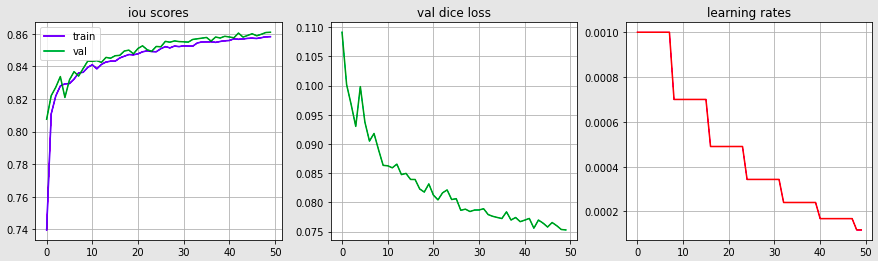
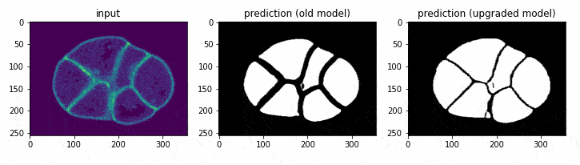
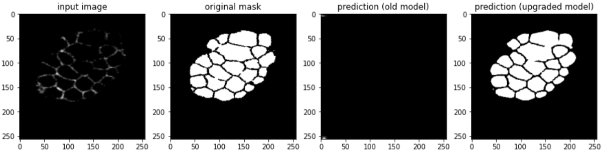

GSoC - Coding Period Week 2
The goal for this week was to upgrade the DevoLearn cell membrane segmentation model. Feel free to check out the code - Link
Work Done This Week (June 14th to June 20th)
1. Fixed the Preprocessing Pipeline:
- Fixed a strange issue that led to an offset in the image filenames.
- Used PNG format to store the images instead of JPG (which was being used).
- The JPG format led to lossy edges in segmentation maps, which was being tackled using OpenCV based operations, but that led to larger gaps between the segmentation maps of individual cells. This has been fixed.
- Saved postprocessed data in Google Drive, links below:
- Postprocessed Images - Google Drive link
- Csv file - Google Drive link
- Original data - Paper Link, Data on Figshare
- The diagram below highlights the difference between new and old training data.

2. New Augmentation techniques:
- Added in a couple more Albumentations based image augmentation techniques.
3. Automated Hyperparameter Optimization:
- Used Optuna to automate the process of finding optimal hyperparameters, I used it to optimize the learning rate and batch size to maximize the IOU score.
- Ran 100 Optuna trials, 1 epoch each, on 10% of available data.
4. Training metrics:
- The image below showcases metrics after 50 epochs of training.

5. Old vs New Model:
- The code to generate the following plots could be found in the training notebook.



Planned:
- Push the upgraded cell membrane segmentation model into the main DevoLearn repository.
- Work on upgrading the DevoLearn lineage population model.
- Revamp the existing DevoLearn starter notebook, add interactive plots.